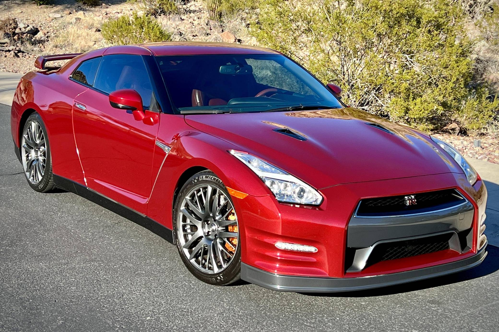

The Nissan GT-R (Japanese: 日産・GT-R, Nissan GT-R), is a sports car and grand tourer produced by Nissan, unveiled in 2007. It is the successor to the Nissan Skyline GT-R, a high-performance variant of the Nissan Skyline.
Nissan hand-builds each 3.8-liter twin-turbo V6 engine for the GT-R, and its 545 horsepower puts many V8 engines to shame; the GT-R Nismo edition puts out a whopping 600. Nissan.com
